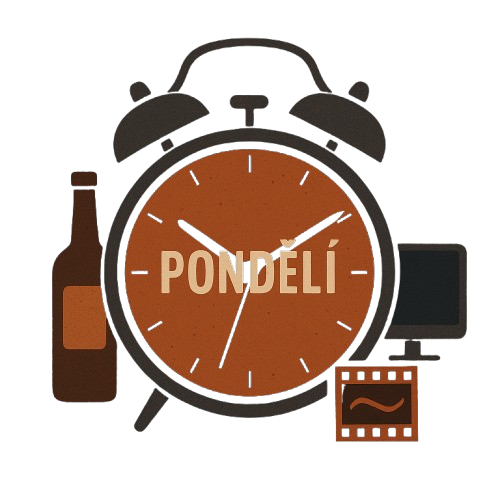

Pondělí
Nastav tón týdne hned ráno

Většina lidí pondělí nenávidí. Tváří se, že je to nutné zlo, že je to návrat do klece, do kolotoče, do nepříjemna. A tak se z pondělí stane otrava. Jenže já věřím, že pondělí je dar. Jedna z mála věcí, který máme každý týden úplně znova. Čistý list. Startovní čára.
A je jen na tobě, jestli zůstaneš stát, nebo do toho kopneš. Já jsem roky začínal týden v mlze. Budík na třikrát, mobil hned do ruky, zbytečnosti na očích ještě předtím, než se mozek stihnul srovnat. Výsledek? Táhl jsem za sebou unavené tělo i mysl, než se to v úterý trochu chytlo. A někdy ani to ne.
Pak jsem si řekl dost. Pondělí není zlo. Není to trest, ale příležitost. A to, jak začneš týden, určuje, jak ten týden dopadne a jak ho prožiješ.
Ráno není detail. Je to kotva.
Všimni si, jak vypadá tvoje pondělní ráno. Ne takové to „mělo by“ nebo „ideálně by mělo být“. Ale fakt, jak to vypadá. Jak vstaneš? S jakou náladou? Co uděláš jako první? Máš plán, nebo tě hned po probuzení pohlcuje svět?
Protože tohle není drobnost. To je kotva. A když ji nehodíš do správné vody, proud tě stáhne jinam. Tam, kde to neřídíš. Tam, kde se jen vezeš.
Pondělní ráno je jako pilotní díl seriálu. Buď nastavíš, jak to celé pojede – nebo to bude patlanec, co nedává smysl. A ve čtvrtek zjistíš, že jsi vlastně nic neřídil.
Tvrdý start. Protože pohodlí se tě nezeptá.
První momenty pondělího rána rozhodujou o zbytku dne. Vstaneš včas? Uděláš něco pro tělo? Připravíš si hlavu? Anebo se hned nalepíš na displej a necháš si do hlavy nasypat svět?
Můj start dneska? Ve 3:30 jsem vstal. Ne kvůli nějaké challenge. Kvůli sobě. Dal jsem 3x2 min planku, studenou sprchu, snídani v klidu. Bez mobilu. Bez lidí. Jen klid a záměr. A pak hned k prvnímu těžkýmu úkolu. Ne tomu nejzábavnějšímu. Tomu, který tlačí. Když ho uděláš jako první, zbytek dne ti připadá lehčí.
Tvrdé ráno tě srovná. A když ho neuděláš, pohodlí tě semele. A ani si nevšimneš.
Plán není pro slabé. Plán je zbraň.
Lidi si často myslí, že plánování je pro slabé. Že silný chlap přece improvizuje. Blbost. Bez plánu děláš to, co k tobě zrovna přiletí. To, co na tebe někdo hodí. Ale když máš plán, máš filtr. Víš, co je tvoje. Víš, čemu dáš ráno energii, a co klidně odložíš.
Já si píšu tři věci večer. Tři konkrétní věci, co druhý den udělám. A ráno po nich jdu. Žádné přemýšlení. Žádné „jestli se mi chce“. Jdu, protože jsem si to určil.
A to je klíč. Ne jet podle nálady. Ale jet podle směřování. Pondělí je přesně ten den, kdy si to ověříš. Kdy zjistíš, jestli jsi ten, kdo tahá za provaz, nebo ten, kdo se na něm houpe.
Večer není na dojíždění. Večer je uzávěrka.
Když dojíždíš pondělí večer s pocitem, že ti všechno uteklo mezi prsty, je něco špatně. Ne že by ses měl zničit – ale měl bys vědět, že jsi něco držel v ruce. Že jsi vedl.
Večer je čas na krátkou reflexi. Ne rozbor na A4. Jen pár vět. Co jsem dnes fakt udělal? Kde jsem uhnul? Co zítra nechci zopakovat? Píšu si to. Protože jinak se ty dny slijou v jedno. A to je začátek pasivity. Život bez stopy.
Na konci pondělí chci mít pocit, že jsem to otevřel dobře. Ne že jsem přežil. Ale že jsem vykopl něco, co má směr. A ten směr si držím já.
Závěr: Nečekej, až tě pondělí semele
Pondělí není nepřítel. Je to zrcadlo. A ukáže ti přesně to, co do něj sám pustíš. Nečekej, až tě přejede. Vem si ho. Zvedni se. Udělej tři věci, které nejsou pohodlné, ale dávají smysl. A večer budeš spát jinak. Ne proto, že jsi všechno stihl. Ale proto, že jsi to vedl.
Pondělí ti ukáže, jestli jsi chlap, co čeká, nebo chlap, co vstává. Rozhodni se hned ráno.